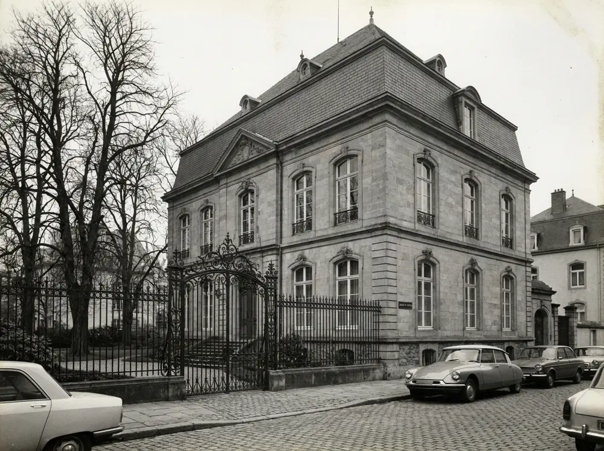
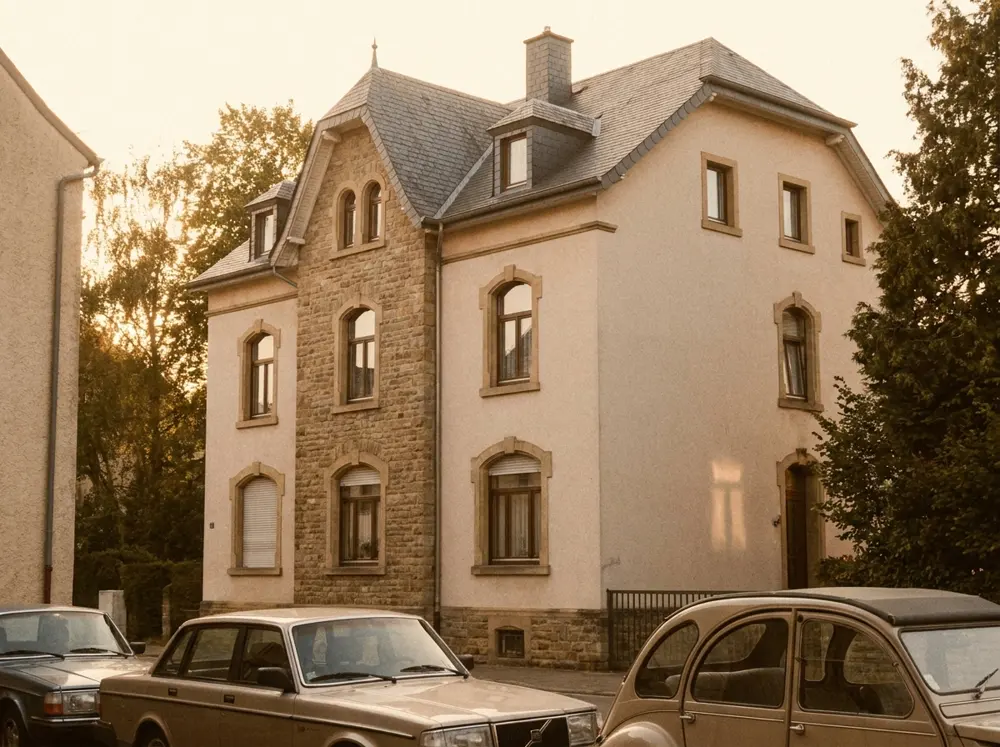
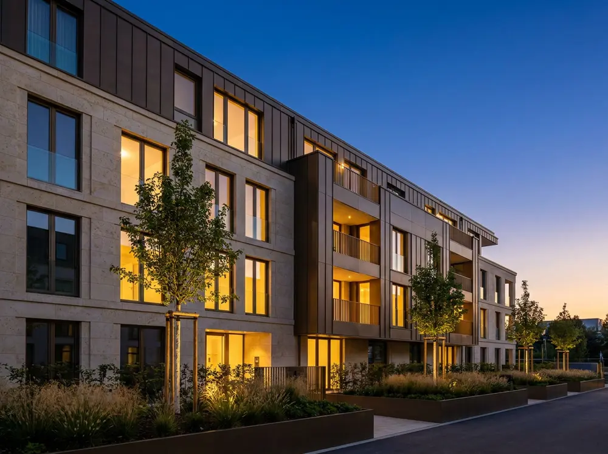

Villa Elterberg
Une maison de maître reprise pierre par pierre, rendue à une seule main — la charpente d'origine est toujours en place.
( APERÇU ) — démo fictive créée par Scarsellato · entreprise, projets et chiffres fictifs · visuels générés par IA.
DEPUIS 1957
( 01 ) — LE CHANTIER
KOHNEN & FILS · CONSTRUCTION, RÉNOVATION, PROMOTION · LUXEMBOURG (aperçu)
chiffres fictifs (aperçu)
( 02 ) — CONVICTION
La plupart des maisons se vendent.
Les meilleures se transmettent.
( 03 ) — HÉRITAGE
projets fictifs — grammaire d'aperçu

Une maison de maître reprise pierre par pierre, rendue à une seule main — la charpente d'origine est toujours en place.

Neuf logements au centre de Mersch, tenus dans le gabarit du village — les encadrements en pierre viennent de la carrière d'à côté.

Quatorze logements, pierre calcaire et bronze — livrés à la date écrite au contrat, deux hivers compris.
« Un chantier se termine un vendredi. Une maison, elle, commence ce jour-là — et elle doit tenir plus longtemps que nous. »
JOS KOHNEN · FONDATEUR (personnage fictif)
( 04 ) — SAVOIR-FAIRE
Du terrain nu aux clés : un seul interlocuteur, un planning écrit, un prix qui ne bouge pas après signature.
Structures, toitures, extensions — les maisons anciennes du pays, reprises sans les défigurer.
Nos propres résidences, du foncier à la livraison — nous vendons ce que nous avons construit, rien d'autre.
( 05 ) — INVITATION
Décrivez votre projet en deux lignes — un avis argumenté vous revient sous 48 h ouvrées, sans engagement. (formulaire de démonstration)